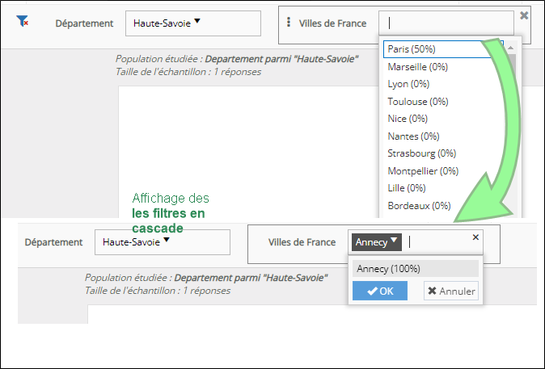

Filtre de vue
Le filtre de vue permet de sélectionner une ou plusieurs variables qui seront appliquées comme filtre pour l’ensemble de la vue. Ceci permet d’avoir les résultats sur le groupe de répondant qui vous intéresse.
Il existe deux manières de réaliser un filtre de vue.
-
La première solution est de sélectionner filtre de vue en passant le curseur sur le bouton d’ajout d’un nouvel élément (Bouton
 ). Une nouvelle fenêtre s’ouvre ensuite où vous devez choisir la variable de filtre depuis le menu déroulant. Celle-ci apparaîtra ensuite dans la zone de filtre en haut de la page.
). Une nouvelle fenêtre s’ouvre ensuite où vous devez choisir la variable de filtre depuis le menu déroulant. Celle-ci apparaîtra ensuite dans la zone de filtre en haut de la page. -
La deuxième solution est de cliquer-glisser directement une variable dans la zone de filtre située en haut de la page.
REMARQUE : Il est possible de cliquer-glisser autant de variables que vous souhaitez dans la zone de filtre.

-
Une variable de filtre peut être supprimée en passant le curseur sur celle-ci et en cliquant sur .
-
Les filtres appliqués peuvent être réinitialisés en cliquant sur .
Vous pouvez modifier les paramètres des variables placées dans la zone de filtre, il est possible de :
-
Choisir quelles sont les modalités à afficher/masquer (consultez la page sur le gestion des modalités pour plus d'informations).
-
Changer la présentation des modalités d'une variable (en boutons ou en liste déroulante).
Lorsque le filtre est présenté sous forme de liste déroulante, l'utilisateur sera amené à cliquer sur le bouton OK/Annuler pour valider ou non la sélection de modalités.
-
Permettre ou non la sélection multi-critères (la sélection multi-critères est par défaut sélectionnée).
-
Changer le format de l'intitulé d'une variable : Afficher le nom/ l'intitulé ou un alias (modifiable).
-
Afficher/masquer les valeurs (les valeurs sont affichées par défaut).
-
Sélectionner une ou plusieurs valeurs (modalités) par défaut.
La/les valeur(s) seront présélectionnées dès l'ouverture de la vue.
-
Définir la Largeur du menu déroulant (option disponible uniquement pour une visualisation de type Liste déroulante). Cette option permet d'augmenter la largeur du menu lorsque certaines modalités sont tronquées.
Renseignez une valeur en pixels (px). La largeur doit être comprise entre 180 px et 900 px.
-
Rendre les filtres de vue dépendants les uns des autres en cochant l'option Appliquer les filtres en cascade depuis les propriétés de la vue, onglet Affichage.
La sélection faite sur un filtre de vue impacte le contenu des filtres de vue situé à sa droite.
EXEMPLE : On sélectionne le département Haute-Savoie dans le 1er filtre ce qui impacte le contenu du filtre Villes de France pour afficher dans notre exemple la modalité Annecy.

REMARQUE : Lorsque cette option est cochée, les modalités avec 0 réponses ne s'afficheront pas dans la liste des modalités à sélectionner depuis le filtre.